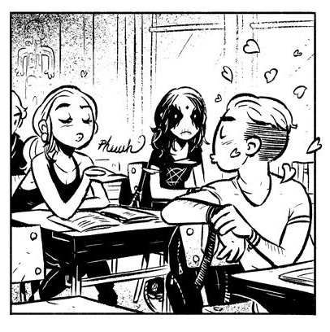

Belzebubs establecieron un estatus de culto en el género del black metal con su álbum debut autoeditado Quis Novit Daemonis Astus (2006). La banda, formada originalmente en 2002 como una pieza de tres por Hubbath, Sløth e Izkariot, encontró un sonido más rápido y melódico con Obesyx uniéndose a la tripulación. Su segundo álbum autoeditado, Moth of Satanas , siguió en 2009, lo que llevó al grupo a firmar con Døden Records.
Sin embargo, debido a una serie de eventos desafortunados, la banda se vio obligada a una pausa durante la mejor mitad de la década. Después de numerosos cambios en la formación y de firmar un nuevo sello, Belzebubs finalmente está listo para resucitar de entre los muertos con la ayuda de su nuevo baterista Samaël, quien ha dado un toque apretado y progresivo a la sección de ritmo. El primer single Blackened Call sale el 28 de junio de Century Media . El álbum completo está previsto para febrero de 2019.